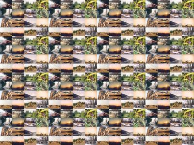
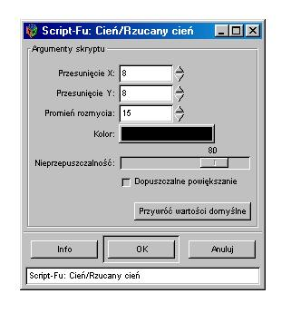

Cechy warstw w programie GIMP
Obrazy przygotowywane GIMPem sk³adaj¹ siê z warstw.
Warstwa jest jak gdyby przezroczyst¹ foli¹, na której rysujemy.
Nowo utworzony rysunek zawiera przynajmniej jedn¹ warstwê - t³o.
Dok³adnie jedna spoœród wszystkich warstw jest w danym momencie wybrana.
Warstwê t¹ bêdziemy nazywali warstw¹ aktywn¹.
To jej dotycz¹ bie¿¹ce operacje edytorskie takie jak na przyk³ad
malowanie pêdzlem, rysowanie o³ówkiem lub wype³nianie kolorem.
GIMP nie umo¿liwia ani wyboru kilku aktywnych warstw ani grupowania warstw.
Jeœli obraz posiada jedynie warstwê t³o, wówczas
nie musimy zwracaæ uwagi na aktywn¹ warstwê, bo i tak wszystkie
operacje dotycz¹ t³a.
W przypadku grafiki sk³adaj¹cej siê z wielu warstw nale¿y
bacznie œledziæ warstwê aktywn¹.
W przeciwnym razie, edycja rysunku mo¿e prowadziæ do dziwnych i niepo¿¹danych efektów.
Wœród cech warstwy mo¿emy wyró¿niæ nazwê, rozmiar, jej po³o¿enie na stosie warstw, widocznoœæ,
przynale¿noœæ do grupy warstw przesuwanych, tryb przenikania, nieprzepuszczalnoœæ
oraz maskê.
Cechy te s¹ od siebie niezale¿ne
i mog¹ byæ dowolnie ustalane dla ka¿dej warstwy z osobna.
Nazywanie warstw jest pomocne w przypadku z³o¿onych obrazów.
Wprawdzie okno dialogowe warstw wyœwietla miniaturowy obraz
zawartoœci warstwy, jednak w przypadku warstw o podobnym wygl¹dzie
ikony mog¹ byæ trudne do odró¿nienia.
Wówczas nazwa wyœwietlana z lewej strony ikony powinna pomóc.
Nazwa warstwy jest dowolnym napisem. W nazwach warstw mo¿emy u¿ywaæ bia³ych znaków oraz
polskich liter z ogonkami. Nale¿y jednak pamiêtaæ o tym, ¿e nazwy warstw musz¹ byæ unikalne.
Jeœli zdarzy nam siê nazwaæ dwie warstwy identycznie, wówczas druga z nich otrzyma przyrostek #2.
Wszystkie warstwy w programie GIMP s¹ prostok¹tne.
Program nie umo¿liwia tworzenia warstw o innych kszta³tach.
Nie oznacza to jednak, ¿e warstwa bêdzie zawsze widoczna na rysunku w kszta³cie prostok¹ta.
Czêœæ pikseli warstwy mo¿e byæ przezroczystych,
dziêki czemu obraz umieszczony na warstwie mo¿e mieæ dowolny kszta³t.
Rozmiar ka¿dej warstwy mo¿e siê ró¿niæ od rozmiaru rysunku.
Warstwa mo¿e byæ zarówno mniejsza jak i wiêksza od ca³ego rysunku.
Wymiary i kszta³t warstwy ograniczaj¹ jej zasiêg.
Innymi s³owy nie mo¿emy modyfikowaæ pikseli obrazu le¿¹cych poza aktywn¹ warstw¹.
Trzeci¹ wa¿n¹ cech¹ warstwy jest jej miejsce na stosie warstw.
Warstwy le¿¹ jedna na drugiej i w przypadku zachodzenia na siebie
warstwa górna przys³ania warstwê doln¹.
Oczywiœcie ka¿d¹ warstwê mo¿emy przesuwaæ zarówno do góry jak i do do³u.
Kolejna w³aœciwoœæ warstw u³atwiaj¹ca pracê
to widocznoœæ. Ka¿da warstwa mo¿e byæ widoczna lub niewidoczna.
Zmiana widocznoœci warstw ma dwa wa¿ne zastosowania. Z jednej strony
umo¿liwia obejrzenie rysunku bez pewnych jego elementów
(elementy nie s¹ usuniête a jedynie niewidoczne).
Po drugie steruj¹c widocznoœci¹ mo¿emy wybraæ kilka warstw
i wykonaæ na nich operacjê ³¹czenia b¹dŸ wyrównania.
WidocznoϾ warstw dzieli warstwy na dwie grupy: warstwy widoczne i niewidoczne.
W ten sposób mo¿emy jak gdyby zaznaczyæ kilka warstw.
Czêsto zdarza siê, ¿e wzajemne po³o¿enie pewnych warstw jest bardzo wa¿ne.
Tak bêdzie na przyk³ad w przypadku warstw tworz¹cych menu.
Warstwy takie nale¿y przesuwaæ razem, w przeciwnym razie ka¿de
przesuniêcie bêdzie siê wi¹za³o z mozolnym uk³adaniem kolejnych elementów tworz¹cych ca³oœæ.
Operacja przesuwania warstw dotyczy warstwy aktywnej oraz warstw,
które dodamy do grupy warstw modyfikowanych operacj¹ przesuwania.
Wzajemnym przenikaniem warstw steruj¹ w³aœciwoœci tryb oraz nieprzepuszczalnoœæ.
Nieprzepuszczalnoœæ jest ustalana w procentach (od 0% do 100%) i okreœla
jak bardzo dana warstwa jest przezroczysta. Natomiast tryb warstwy okreœla, w jaki sposób
piksele danej warstwy maj¹ modyfikowaæ wygl¹d ca³ego obrazu.
Dostêpnych jest piêtnaœcie ró¿nych trybów, które umo¿liwiaj¹ miedzy innymi
wyœwietlanie tylko kolorów jaœniejszych, tylko kolorów ciemniejszych oraz wypalanie.
Ostatni¹ i zarazem najbardziej skomplikowan¹ cech¹ warstwy jest jej maska.
Maska warstwy to oddzielny obraz zwi¹zany z dana warstw¹.
Zadaniem maski jest przys³oniêcie czêœci warstwy.
Rysunki pierwszy oraz drugi ilustruj¹ opisane w³aœciwoœci warstw.
Przedstawiony rysunek sk³ada siê z piêciu warstw o nazwach ¿ó³ta, kot, ró¿owa, pies oraz t³o.
Warstw¹ najwy¿sz¹ jest warstwa o nazwie ¿ó³ta, zaœ najni¿sz¹ - warstwa t³o.
Aktywna jest warstwa szczytowa o nazwie ¿ó³ta. Informuje nas o tym
niebieskie t³o w oknie dialogowym warstw. Ikona "oko" widoczna z lewej strony
w³¹cza widocznoœæ warstwy. Na przedstawionym rysunku widoczne s¹ wszystkie warstwy
oprócz warstwy o nazwie pies. Ikona o kszta³cie krzy¿a w³¹czona dla dwóch warstw ró¿owej oraz ¿ó³tej
powoduje, ¿e warstwy te bêd¹ przesuwane razem, zachowuj¹c swoje wzajemne po³o¿enie.
Ponadto warstwa ¿ó³ta ma ustawion¹ nieprzepuszczalnoœæ na 52.2 procent, zaœ warstwa
ró¿owa posiada zdefiniowana maskê (prostok¹tny rysunek z lewej strony nazwy warstwy).
Na warstwie ¿ó³tej jest narysowane ¿ó³te ko³o.
Warstwa ta jest umieszczona na samej górze, zatem przykrywa wszystkie inne warstwy.
Z racji na swoj¹ 52.2 procentow¹ nieprzepuszczalnoœæ, ¿ó³te ko³o jest nieco przezroczyste
i nie przys³ania ca³kowicie ani napisu "kot" ani ró¿owej figury.
Drug¹ warstw¹ jest warstwa o nazwie kot. Na niej jest umieszczony czarny napis "kot".
Napis "kot" przys³ania ca³kowicie ró¿ow¹ figurê, gdy¿ nieprzepuszczalnoœæ
warstwy kot wynosi 100% (jest to wartoœæ domyœlna).
Kolejn¹ warstw¹ jest warstwa ró¿owa. Na warstwie tej narysowano ró¿owy prostok¹t.
Maska warstwy ró¿owej usuwa naro¿nik prostok¹ta.
Przedostatnia warstwa ma nazwê pies. Wprawdzie na warstwie tej jest umieszczony napis "pies",
ale warstwa ta nie jest widoczna.
Ostatni¹ warstw¹ jest bia³e t³o rysunku.
Rys. 1. Przyk³adowy rysunek wielowarstwowy.
Rys. 2. Warstwy rysunku 1.
Widocznoœæ warstwy zmieniamy klikaj¹c w ikonê oka.
Jeœli ikona oka siê nie pojawia, wówczas warstwa jest niewidoczna.
Ponowne klikniêcie w miejsce, w którym znajduje siê ikona oka dla danej warstwy w³¹cza jej widocznoœæ.
Jeœli przytrzymamy klawisz Shift i klikniemy w ikonê oka wówczas
widoczna stanie siê wy³¹cznie klikniêta warstwa.
Ponowne klikniêcie z przytrzymanym klawiszem Shift spowoduje w³¹czenie widocznoœci wszystkich warstw.
W podobny sposób do³¹czamy warstwê do grupy warstw wspólnie przesuwanych.
Klikniêcie w ikonê krzy¿a (lub w miejsce, gdzie ta ikona siê znajduje) w³¹cza
oraz wy³¹cza przesuwanie warstwy.
Nazwê warstwy zmieniamy klikaj¹c podwójnie w zadan¹ warstwê w oknie dialogowym Warstwy, kana³y i œcie¿ki.
Natomiast maskê warstwy dodajemy korzystaj¹c z menu
kontekstowego okna dialogowego warstw.
Po wybraniu opcji Dodaj maskê warstwy pojawi siê
okno dialogowe, w którym ustalamy pierwotn¹
zawartoœæ maski. W celu usuniêcia maski wybieramy
opcje Usuñ maskê dostêpn¹ poni¿ej
opcji dodaj¹cej maskê.
Jeœli lista warstw nie mieœci siê w oknie Warstwy, kana³y i œcie¿ki, wówczas warto okno to nieco zwiêkszyæ.
Uwaga, menu kontekstowe obrazu oraz menu kontekstowe okna warstw ró¿ni¹ siê miêdzy sob¹.
Jeœli szukaj¹c danej opcji nie mo¿emy jej znaleŸæ w menu kontekstowym okna warstw,
to nale¿y zajrzeæ do menu kontekstowego obrazu.
Dodawanie warstw do rysunku
Nowe warstwy w rysunku pojawiaj¹ siê po naciœniêciu jednego z przycisków Nowa warstwa lub Duplikuje warstwê
dostêpnych w oknie warstw.
Okno dialogowe warstw jest dostêpne po wybraniu opcji
Warstwy | Warstwy, kana³y i œcie¿ki z menu kontekstowego obrazu (skrót Ctrl+L).
Przycisk Duplikuje warstwê tworzy kopiê warstwy aktywnej, zaœ
przycisk Nowa warstwa wyœwietla okno dialogowe, w którym u¿ytkownik ustala nazwê warstwy, jej wymiary
oraz sposób wype³nienia (warstwa mo¿e byæ przezroczysta, wype³niona kolorem farby lub t³a).
Æwiczenie 1
Wykonaj rysunek zawieraj¹cy cztery warstwy o nazwach ró¿owa, zielona, czerwona oraz t³o.
Na warstwie ró¿owej narysuj ró¿owy kwadrat, na zielonej - zielone ko³o,
zaœ na czerwonej - czerwony prostok¹t.
Wykonanie æwiczenia rozpoczynamy od utworzenia nowego obrazu.
Nastêpnie w oknie warstw tworzymy kolejno trzy warstwy nazywaj¹c je ró¿owa, zielona oraz czerwona.
Domyœlnie, rozmiar nowej warstwy jest równy rozmiarowi ca³ego rysunku.
Ustalmy typ wype³nienia nowo tworzonych warstw na przezroczysty.
Nastêpnie przystêpujemy do narysowania figur. W celu narysowania ró¿owego kwadratu
wybieramy jako aktywn¹ warstwê ró¿ow¹ (nale¿y klikn¹æ
w nazwê warstwy w oknie dialogowym warstw). Po wybraniu aktywnej warstwy
tworzymy selekcjê w kszta³cie kwadratu i wype³niamy j¹ farb¹ koloru ró¿owego.
Pracê nad zielonym ko³em rozpoczynamy od wyboru aktywnej warstwy.
Klikamy w nazwê "zielona" w oknie warstw.
Nastêpnie zaznaczamy obszar okr¹g³y i wype³niamy go farb¹.
Ostatni¹ z figur, czerwony prostok¹t, wykonujemy identycznie:
wybieramy aktywn¹ warstwê o nazwie "czerwona", zaznaczamy obszar
prostok¹tny i wype³niamy go farb¹.
Rys. 3. Kilkuwarstwowy rysunek z æwiczenia pierwszego.
Kolejnoœæ warstw mo¿emy zmieniaæ
korzystaj¹c z odpowiednich przycisków dostêpnych w dolnej czêœci okna warstw oraz z menu kontekstowego
Warstwy | Stos. Obie mo¿liwoœci ilustruje rysunek 4.
Rys. 4. Menu kontekstowe oraz przyciski okna Warstwy, kana³y i œcie¿ki zmieniaj¹ce kolejnoœæ warstw.
Operacja usuwania warstw jest wykonywana przy u¿yciu przycisku z ikon¹ kosza, którego nale¿y
szukaæ w dolnej czêœci okna warstw. Oczywiœcie po naciœniêciu przycisku usuniêta zostanie warstwa bie¿¹ca.
Operacja usuwania warstwy posiada skrót Ctrl+X.
Jeœli zdarzy siê tak, ¿e nieopatrznie usuniemy potrzebn¹ warstwê to nale¿y pamiêtaæ,
¿e operacja cofnij (skrót Ctrl+Z) przywróci poprzedni stan rysunku.
Æwiczenie 2
Dysponujesz szeœcioma ilustracjami budownictwo.jpg, przyroda.jpg, miasto.jpg,
rekreacja.jpg, rolnictwo.jpg oraz transport.jpg. Ka¿dy z obrazów ma rozmiar 800x600 pikseli.
Przygotuj ilustracjê prezentuj¹c¹ szeœæ podanych plików na bia³ym tle w pomniejszonych rozmiarach.
Obraz przygotuj tak, by ka¿da miniaturka by³a umieszczona na osobnej warstwie.
Po utworzeniu nowego obrazu o dostatecznie du¿ych rozmiarach (np. 800x600)
mo¿emy przyst¹piæ do kopiowania miniatur.
Kopiowanie ka¿dej z miniatur przebiega nastêpuj¹co:
otwieramy plik z obrazem np. budownictwo.jpg. Obraz skalujemy do
¿¹danych rozmiarów np. 200x150 pikseli (operacja Obraz | Przeskaluj obraz).
Nastêpnie zaznaczamy ca³y obraz (Ctrl+A)
i kopiujemy (Ctrl+C). Przechodzimy do nowo tworzonego obrazu i wykonujemy operacjê
wklejania (Ctrl+V). Wklejony obraz wyl¹duje w tzw. p³ywaj¹cym zaznaczeniu.
W celu utworzenia nowej warstwy zawieraj¹cej w³aœnie wklejony obraz przechodzimy do okna
warstw i naciskamy przycisk Nowa warstwa (mo¿emy skorzystaæ ze skrótu Ctrl+N;
najwygodniej operacjê tak¹ wykonaæ wciskaj¹c kolejno Ctrl+V, Ctrl+L oraz Ctrl+N).
W ten sposób wklejany obraz trafia na osobn¹ warstwê. Nazwê warstwy
mo¿emy zmieniæ podwójnie klikaj¹c w oknie warstw w dodan¹ warstwê.
Wklejane obrazy wyl¹duj¹ w ró¿nych miejscach, ale zazwyczaj nie tam, gdzie chcielibyœmy je ujrzeæ.
W celu przesuniêcia warstwy nale¿y wybraæ narzêdzie Przesuwanie warstw i zaznaczeñ, a nastêpnie
z³apaæ warstwê myszk¹ i przesun¹æ.
Ustawienie prowadnic bardzo u³atwia dok³adne pozycjonowanie warstw.
Dodatkowo, do przesuwania warstw mo¿emy u¿yæ czterech strza³ek z klawiatury.
Przytrzymanie klawisza Shift zmienia odleg³oœæ, o jak¹ strza³ki przesuwaj¹ warstwê.
Rys. 5. Obraz zawieraj¹cy szeœæ pomniejszonych plików jpg oraz zawartoœæ okna warstw.
Istnieje równie¿ mo¿liwoœæ wklejenia obrazu bezpoœrednio w jedn¹ z istniej¹cych ju¿ warstw.
S³u¿y do tego przycisk z ikon¹ kotwicy znajduj¹cy siê w dolnej czêœci okna warstw.
Jeœli po wykonaniu operacji wklej u¿yjemy przycisku zakotwiczania, wówczas
wklejany obraz trafi na aktywn¹ warstwê.
G³ównym minusem zakotwiczania warstw jest to, ¿e po zakotwiczeniu nie mo¿emy
ju¿ niezale¿nie modyfikowaæ wklejonego elementu.
Æwiczenie 3
Wykonaj widokówkê zatytu³owan¹ "Zima" przedstawion¹ na rysunku 6.
Do pracy wykorzystaj piêæ gotowych zdjêæ. Zdjêcia wklej na osobne warstwy, a nastêpnie
umieœæ w sposób przedstawiony na rysunku.
Rys. 6. Widokówka "Zima".
Pracê rozpoczynamy od utworzenia nowego obrazu o wymiarach 860x660 pikseli.
Potem kolejno wklejamy piêæ zdjêæ pamiêtaj¹c o skalowaniu zdjêæ do rozmiarów 400x300.
Zdjêcia wklejamy tak, by trafi³y na osobne warstwy.
Po wklejeniu fotografii ustalamy prowadnice poziome oraz pionowe, po czym przesuwamy wklejone fotografie.
Wyrównanie warstw
Przy obrazach sk³adaj¹cych siê z wielu warstw rêczne wyrównywanie po³o¿enia
z wykorzystaniem prowadnic jest dosyæ pracoch³onne.
Operacja wyrównywania warstw powoduje przemieszczenie widocznych warstw wed³ug okreœlonych regu³.
Jeœli chcemy u¿yæ tej operacji nale¿y najpierw ustaliæ, by widoczne by³y tylko te warstwy, które maj¹ zostaæ
przemieszczone, a nastêpnie w oknie dialogowym wybraæ sposób rozmieszczenia.
Æwiczenie 4
Przygotuj rysunek prezentuj¹cy cztery ró¿nokolorowe kwadraty.
Kwadraty roz³ó¿ w równych odleg³oœciach od siebie w kierunku pionowym oraz poziomym,
tak jak to przedstawiono na rysunku 7.
Rys. 7. Operacja Wyrównaj widoczne warstwy.
Wykonanie rysunku rozpoczynamy od przygotowania kwadratów.
Na pustym rysunku posiadaj¹cym jedynie warstwê t³a wype³nion¹ bia³ym kolorem
tworzymy kwadratowe zaznaczenie. Zaznaczenie to kopiujemy (Ctrl+C), po czym wklejamy (Ctrl-V).
Wklejony kwadrat umieszczamy na nowej warstwie podobnie jak to robiliœmy w æwiczeniu drugim
(Ctrl+V, Ctrl+L, Ctrl+N).
W ten sposób dodaliœmy do obrazu warstwê o rozmiarach równych zaznaczonemu kwadratowi.
Warstwie nadajemy nazwê czerwona, po czym kwadrat wype³niamy kolorem czerwonym.
W identyczny sposób (tj. wykonuj¹c operacje kopiuj/wklej)
wzbogacamy obraz o trzy warstwy, z których ka¿da zawiera kwadrat innego koloru.
Gdy obraz liczy piêæ warstw przystêpujemy do równomiernego roz³o¿enia kwadratów.
Przesuwamy kwadraty w dowolne miejsca rysunku, a nastêpnie aktywujemy opcjê
Warstwy | Wyrównaj widoczne warstwy.
W oknie dialogowym ustalamy rodzaj wyrównania, po czym zatwierdzamy dokonane zmiany.
Oczywiœcie korzyœci zwi¹zane z automatycznym wyrównywaniem widocznych warstw
s¹ tym wiêksze, im wiêcej warstw chcemy wyrównaæ.
Æwiczenie 5
Dysponujesz szesnastoma zdjêciami o wymiarach 800x600 pikseli.
Przygotuj jedn¹ ilustracje 800x600 prezentuj¹c¹ tabelkê 4x4 szesnastu fotografii.
Zadbaj o równe u³o¿enie wszystkich fotografii.
Celem tego æwiczenia jest przygotowanie ilustracji widocznej na rysunku 8.
Oczywiœcie pierwszym krokiem bêdzie utworzenie nowego rysunku i wklejenie doñ szesnastu miniaturek
o wymiarach 200x150 pikseli tak, by ka¿da miniaturka trafi³a na osobn¹ warstwê.
Nastêpnie przystêpujemy do wyrównania miniatur.
Ustawiamy widocznoœæ tak, by widoczne by³y wy³¹cznie fotografie z pierwszej kolumny.
Przesuñmy najwy¿sz¹ fotografiê tak, by styka³a siê z górn¹ krawêdzi¹ obrazu,
oraz doln¹ fotografiê tak,
by styka³a siê z doln¹ krawêdzi¹ obrazu.
Teraz wybieramy operacjê Warstwy | Wyrównaj widoczne warstwy, zaœ w oknie dialogowym
ustalamy:
- styl poziomy - zbierz oraz pozioma podstawa - lewa krawêdŸ
(spowoduje to przesuniêcie zdjêæ do lewej krawêdzi obrazu),
- styl pionowy - wype³nij z góry na dó³ oraz pionowa podstawa - górna krawêdŸ
(spowoduje to równomierne rozmieszczenie widocznych warstw od góry do do³u),
- zaznaczamy wykorzystanie dolnej (niewidocznej) warstwy jako bazy.
Po potwierdzeniu ustalonych parametrów przyciskiem OK, zdjêcia pierwszej kolumny
zostan¹ rozmieszczone zgodnie z naszymi oczekiwaniami.
W podobny sposób rozk³adamy pozosta³e warstwy.
 Rys. 8. Kratka szesnastu zdjêæ.
Sp³aszczenie obrazu
Jeœli obraz zawiera zbyt wiele warstw wówczas edycja staje siê uci¹¿liwa.
Wykonanie niemal ka¿dej operacji wymaga szukania potrzebnej warstwy, zmiany widocznoœci warstw itd.
Operacj¹ odwrotn¹ do dodawania nowych warstw jest sp³aszczanie obrazu.
Mamy mo¿liwoœæ po³¹czyæ ze sob¹ wszystkie warstwy, warstwy widoczne lub warstwy od bie¿¹cej w dó³.
Wszystkie powy¿sze operacje s¹ dostêpne w menu kontekstowym okna warstw.
Æwiczenie 6
Opieraj¹c siê na æwiczeniu 5 wykonaj ilustracjê prezentuj¹c¹
szesnaœcie ilustracji z æwiczenia 5.
Poniewa¿ w æwiczeniu 5 wyst¹pi³o szesnaœcie rysunków, a teraz mamy wykonaæ kolejne szesnaœcie
miniatur, zatem umieszczenie ka¿dej z miniatur na osobnej warstwie sprawi³oby, ¿e
obraz liczy³by 257 warstw! Wyrównanie tak wielkiej liczby warstw to zadanie doœæ
karko³omne!
Znacznie ³atwiej wykonaæ to æwiczenie przygotowuj¹c sp³aszczon¹ wersjê æwiczenia 5.
Po otworzeniu pliku xcf bêd¹cego wynikiem æwiczenia 5,
wykonujemy operacjê Warstwy | Sp³aszcz obraz.
Tak otrzymany obraz kopiujemy i wklejamy do otwartego dokumentu.
Po wklejeniu czterech identycznych obrazów i równym ich roz³o¿eniu
ponownie wykonujemy operacjê ³¹cz¹c¹ warstwy, lecz tym razem ³¹czymy
jedynie cztery miniaturki. Nale¿y wy³¹czyæ widocznoœæ t³a, po czym wykonaæ
Warstwy | Po³¹cz widoczne warstwy (skrót klawiszowy Ctrl+M).
Otrzyman¹ warstwê kopiujemy i wklejamy trzy razy.
Tak otrzymane cztery warstwy (ka¿da z nich jest identyczna i przedstawia cztery miniaturki
rysunku z æwiczenia 5) równo rozk³adamy przy pomocy komendy wyrównywania widocznych warstw.
 Rys. 9. Kratka 256 miniatur.
Efekt cienia
Efekt cienia jest dostêpny w menu kontekstowym Script-Fu | Cieñ | Rzucany cieñ.
Efekt ten dzia³a w oparciu o bie¿¹ce zaznaczenie.
Rzucany cieñ jest cieniem, jakie rzuca zaznaczenie.
Wykonanie efektu cienia powoduje dodanie do rysunku nowej warstwy o nazwie "Drop shadow",
na której jest umieszczony cieñ.
Æwiczenie 7
Przygotuj rysunek kwadratu, który rzuca cieñ.
Po utworzeniu nowego obrazu o bia³ym tle wykonujemy kwadratowe zaznaczenie.
Zaznaczenie to wype³niamy kolorem niebieskim.
Nastêpnie wybieramy z menu kontekstowego efekt cienia.
Rysunek 10 prezentuje otrzymany kwadrat, warstwy obrazu oraz parametry,
jakie s¹ dostêpne dla efektu cienia.
 Rys. 10. Rzucanie cienia. Æwiczenie 8
Dysponuj¹c piêcioma fotografiami morza przygotuj widokówkê
przedstawion¹ na rysunku 11. Zauwa¿, ¿e wszystkie zdjêcia rzucaj¹ niewielki cieñ.
Æwiczenie to jest pewnym rozszerzeniem æwiczenia 3.
Pracê rozpoczynamy wiêc identycznie jak w æwiczeniu trzecim i
kontynujemy a¿ do uzyskania piêciu zdjêæ odpowiednio rozmieszczonych.
Teraz dokonujemy zaznaczenia bia³ego obszaru dooko³a fotografii.
Naj³atwiej wykonamy to zadanie korzystaj¹c z magicznej ró¿d¿ki
(tj. narzêdzia o nazwie Zaznaczanie s¹siaduj¹cych obszarów; skrót z).
Pojedyncze klikniêcie w bia³y obszar otaczaj¹cy zdjêcia dokona odpowiedniej selekcji
(warstw¹ aktywn¹ powinno byæ t³o, zaœ narzêdzie Zaznaczanie s¹siaduj¹cych obszarów powinno mieæ zaznaczon¹ opcjê
Próbkowanie z kana³em alfa i ustalony próg próbkowania oko³o 10).
Teraz wykonujemy efekt cienia i widokówka jest gotowa.
Rys. 11. Widokówka "Fale".
Efekt cienia stanowi przyk³ad operacji, która po wykonaniu dodaje do obrazu warstwê.
Innymi przydatnymi efektami tego typu s¹ dodawanie krawêdzi, ramki czy siatki do obrazu.
Modyfikacja kolorów
Kolejne wa¿ne zastosowanie warstw to modyfikacja kolorów rysunku.
Kolorystyka warstw, podobnie jak po³o¿enie, mo¿e byæ zmieniana niezale¿nie.
Æwiczenie 9
Przekszta³æ ilustracjê z æwiczenia 2 tak, by ka¿da warstwa mia³a inny odcieñ
(patrz rysunek 12).
Po otworzeniu rysunku z zadania 2 przystêpujemy do modyfikacji kolorów.
Operacja Obraz | Kolory | Desaturacja przekszta³ca aktywn¹ warstwê
w obraz czarno-bia³y. Nastêpnie wyœwietlamy okno dialogowe
zmieniaj¹ce balans kolorów Obraz | Kolory | Balans kolorów
i korzystaj¹c z suwaków nadajemy warstwie ¿¹dany odcieñ.
W identyczny sposób postêpujemy z nastêpnymi warstwami.
Rys. 12. Modyfikacja kolorów poszczególnych warstw.
NieprzepuszczalnoϾ warstwy
Dziêki w³aœciwoœci o nazwie nieprzepuszczalnoœæ warstwy mog¹ siê
czêœciowo przys³aniaæ. Zmniejszaj¹c nieprzepuszczalnoœæ spowodujemy,
¿e warstwa stanie siê w pewnym stopniu przezroczysta.
Najprostszy przyk³ad wykorzystania nieprzepuszczalnoœci to
czêœciowe rozjaœnienie pewnych fragmentów rysunku.
Æwiczenie 10
Przygotuj widokówkê "Zima" z æwiczenia 3 dodaj¹c efekty
widoczne na rysunku 13.
Zmiany oryginalnej widokówki polegaj¹ na wybieleniu oraz zaokr¹gleniu naro¿ników
czterech fotografii znajduj¹cych siê w tle.
Rozpocznijmy od wybielenia. Do rysunku dodajemy warstwê bia³¹.
Umieszczamy j¹ poni¿ej fotografii œrodkowej, ale ponad fotografiami naro¿nymi.
Jeœli warstwa ta jest widoczna, wówczas przes³ania ona fotografie naro¿ne.
Jeœli teraz zmniejszymy nieprzepuszczalnoœæ dodanej bia³ej warstwy do oko³o 50%,
wówczas fotografie naro¿ne stan¹ siê widoczne jak za mg³¹.
Drugi efekt, zaokr¹glenie naro¿ników wymaga zaznaczenia bia³ego obszaru dooko³a wszystkich fotografii.
Ustalmy widocznoœæ warstw tak, by widoczne by³y warstwy t³o oraz cztery naro¿ne fotografie.
Nastêpnie zmieñmy w³aœciwoœci narzêdzia Zaznaczanie s¹siaduj¹cych obszarów
(nale¿y klikn¹æ dwukrotnie w ikonê narzêdzia - magiczn¹ ró¿d¿kê - w oknie g³ównym GIMPa).
We w³aœciwoœciach narzêdzia zaznaczamy opcjê Próbkowanie z kana³em alfa oraz ustalamy
próg próbkowania na 2.4.
Jeœli teraz klikniemy w bia³y obszar obrazu wówczas
selekcja obejmie ca³¹ bia³¹ przestrzeñ pomiêdzy fotografiami (upewnijmy siê, ¿e aktywn¹ warstw¹ jest t³o
oraz usuñmy ewentualne zaznaczenie Ctrl+Shift+A).
Po zaznaczeniu bia³ego obszaru wykonujemy operacjê wyg³adzania selekcji
o promieniu 30 pikseli (opcja Zaznaczenie | Wyg³adŸ),
po czym ponownie wyostrzamy zaznaczenie (opcja Zaznaczenie | Wyostrz).
Nastêpnie dodajemy do obrazu now¹ warstwê i wype³niamy na niej zaznaczenie bia³ym kolorem.
Jeœli warstwê umieœcimy w stosie warstw pomiêdzy fotografi¹ œrodkow¹ a fotografiami naro¿nymi,
wówczas otrzymamy efekt zaokr¹glonych rogów.
Rys. 13. NieprzepuszczalnoϾ warstw.
Narzêdzia tekstowe
Narzêdzie tekstowe s³u¿y do wzbogacania tworzonych obrazów o napisy.
Podobnie jak w przypadku operacji wklejania mamy dwie mo¿liwoœci
u¿ycia narzêdzia: napis mo¿emy zakotwiczyæ na jednej z istniej¹cych warstw lub
umieœciæ na nowej warstwie.
Z powodów identycznych jak w przypadku wklejania, umieszczanie napisów na oddzielnych warstwach
jest wygodniejsze.
Æwiczenie 11
Przygotuj rysunek zawieraj¹cy napis "Witamy w programie GIMP!". Ka¿dy wyraz
napisz innym kolorem i czcionk¹.
Rys. 14. Przyk³ad u¿ycia narzêdzia tekstowego.
Po wybraniu narzêdzia tekstowego z okna g³ównego programu (skrót klawiszowy: t),
klikamy w dowolne miejsce obrazu. Na ekranie pojawi siê okno dialogowe
umo¿liwiaj¹ce wybór kroju czcionki, wielkoœci liter oraz stylu pisma (kursywa, pogrubienie).
Gdy ustalimy wszystkie parametry oraz wpiszemy tekst "Witamy" nale¿y zamkn¹æ okno dialogowe.
Teraz przechodzimy do okna warstw i tworzymy now¹ warstwê.
Wpisany przed chwil¹ napis powinien pojawiæ siê w edytowanym
dokumencie na nowo utworzonej warstwie.
Kolor czcionki zmieniamy wykorzystuj¹c przyciski Kolor narzêdzia i t³a
w lewym dolnym rogu GIMPa lub wykorzystuj¹c paletê kolorów (skrót Ctrl+P).
Jeœli dodane napisy umieœcimy na nowych warstwach, wówczas ka¿dy z nich mo¿emy niezale¿nie
przesuwaæ i zmieniaæ. Zmianê koloru napisu ju¿ dodanego realizujemy nastêpuj¹co.
Modyfikowana warstwa powinna byæ warstw¹ aktywn¹.
Operacja Warstwy | Zaznaczenie z kana³u alfa spowoduje zaznaczenie wprowadzonego napisu.
Teraz korzystamy z narzêdzia do wype³niania farb¹ (skrót Shift+B) i wlewamy w napis dowolny inny kolor.
W identyczny sposób mo¿emy zmieniæ kolor ka¿dego napisu (o ile jest on umieszczony
na osobnej warstwie, a nie zakotwiczony).
Æwiczenie 12
Przygotuj logo firmy "ABC" przedstawione na rysunku 15.
Logo zawiera trzy prostok¹ty, dwa czarne i jeden ¿ó³ty, oraz dwa napisy.
Pracê rozpoczynamy od narysowania prostok¹tów. Wykorzystujemy do tego zaznaczenie prostok¹tne
oraz narzêdzie kube³ek s³u¿¹ce do wype³niania obszarów farb¹.
Nastêpnie dodajemy do rysunku napis "ABC Web Solutions" pisany ¿ó³t¹ czcionk¹.
Napis ten umieszczamy na osobnej warstwie.
Warstwê z napisem kopiujemy stosuj¹c przycisk Duplikuje warstwê (okno warstw).
Skopiowany napis przesuwamy nieco do góry, po czym zmieniamy jego kolor na czarny.
Oczywiœcie æwiczenie mo¿emy równie¿ wykonaæ umieszczaj¹c na ¿ó³to-czarnych prostok¹tach trzy napisy
"ABC", "Web" oraz "Solutions".
Ozdobne napisy
Oprócz zwyk³ego narzêdzia tekstowego umo¿liwiaj¹cego pisanie tekstów standardowymi czcionkami
zainstalowanymi w systemie GIMP posiada bibliotekê skryptów generuj¹cych
ró¿norodne napisy ozdobne. Ozdobne napisy znajdziemy w menu g³ównym
wybieraj¹c kolejno opcje Dodatki | Script-Fu | Loga.
Ka¿dy ze skryptów tworz¹cych loga posiada pewn¹ liczbê w³aœciwoœci takich jak wielkoœæ liter, krój czcionki
czy tekstury. Po wykonaniu skryptu tworzony jest rysunek zawieraj¹cy
logo.
Æwiczenie 13
Przygotuj napis "Witamy w GIMPie!" widoczny na rysunku 16.
Rys. 16. Ozdobny napis wykonany skryptem Lœni¹ce.
Napis ten jest generowany skryptem menu g³ówne | Dodatki | Script-Fu | Loga | Lœni¹ce.
Po wpisaniu tekstu "Witamy w GIMPie!" i zatwierdzeniu zostanie przygotowane ¿¹dane logo.
Jak widaæ na rysunku 16, skrypt tworzy obraz wielowarstwowy. Na osobnych warstwach
zosta³y umieszczone litery, cieñ oraz efekty.
Æwiczenie 14
Wykorzystuj¹c skrypt Lœni¹ce przygotuj logo firmy ABC widoczne na rysunku 17.
Rys. 17. Logo firmy ABC zawieraj¹ce wklejone litery wykonane skryptem Lœni¹ce.
Logo sk³ada siê z kilku elementów. Po pierwsze widzimy du¿y kwadrat zawieraj¹cy
trzy kwadraty czarne, trzy ¿ó³te oraz trzy bia³e. Du¿y kwadrat rysujemy na tle wykorzystuj¹c
narzêdzie do prostok¹tnego zaznaczania obszarów, prowadnice oraz
kube³ek do wlewania farby. Nastêpnym elementem jest cieñ rzucany przez du¿y kwadrat.
Cieñ dodajemy zaznaczaj¹c du¿y kwadrat i wykonuj¹c skrypt Script-Fu | Cieñ | Rzucany cieñ.
Trzecim elementem loga jest czarny napis "ABC Web Solutions". Napis dodajemy wykorzystuj¹c narzêdzie
tekstowe. Ostatnim elementem s¹ trzy lœni¹ce litery A, B, C.
Ka¿d¹ z liter wykonujemy uruchamiaj¹c poznany ju¿ skrypt Lœni¹ce.
W skrypcie zmieniamy gradient na Golden.
Tworzymy logo zawieraj¹ce literê A. W uzyskanym rysunku wy³¹czamy widocznoœæ warstwy t³a,
i ³¹czymy widoczne warstwy: Warstwy | Po³¹cz widoczne warstwy.
Teraz zaznaczamy ca³y rysunek przedstawiaj¹cy literê A (Ctrl+A), nastêpnie go kopiujemy i wklejamy
w opracowywane logo na osobn¹ warstwê. Podobnie postêpujemy z literami B oraz C:
tworzymy literê skryptem Lœni¹ce, wy³¹czamy widocznoœæ t³a, ³¹czymy widoczne warstwy, zaznaczamy ca³oœæ,
kopiujemy i wklejamy na osobn¹ warstwê rysunku z logiem firmy ABC.
Otrzymane logo powinno zawieraæ szeœæ warstw: t³o (z rysunkiem kwadratu), cieñ, warstwê z czarnym napisem oraz trzy warstwy z
literami A, B oraz C.
Maskowanie warstw
Ostatnim etapem zg³êbiania wiedzy na temat warstw jest
maskowanie. Ka¿da warstwa mo¿e posiadaæ w³asn¹ maskê.
Maska jest czarno-bia³ym obrazem, który modyfikuje widocznoœæ warstwy.
Kolor bia³y maski przepuszcza zaœ czarny ukrywa zawartoœæ warstwy.
Po masce warstwy malujemy wykorzystuj¹c wszystkie dostêpne narzêdzia
takie jak pêdzel, wype³nianie kolorem, wype³nianie gradientem
czy narzêdzie tekstowe.
Æwiczenie 15
Do obrazu z æwiczenia 8 dodaj maskê warstwy, która
przepuszcza napis "Kto?" tak jak to przedstawiono na rysunku 18.
Rys. 18. Rysunek z æwiczenia 8 wzbogacony o maskê.
Po otworzeniu obrazu z æwiczenia 8 ³¹czymy wszystkie warstwy oprócz t³a,
tak by otrzymany obraz posiada³ warstwê bia³e t³o oraz warstwê zawieraj¹ca wszystkie miniaturki.
Nastêpnie do warstwy z miniaturkami dodajemy maskê: Warstwy | Dodaj maskê warstwy.
Dodaj¹c maskê ustalamy jej kolor na czarny (pe³na przezroczystoœæ).
Teraz przechodzimy do edycji maski. Klikamy w ikonê maski w oknie warstw.
Wszystkie operacje edycyjne odnosz¹ siê teraz do maski.
Zmieniamy kolor narzêdzia na bia³y, a nastêpnie wybieramy narzêdzie tekstowe.
Wprowadzamy napis "Kto?", zamykamy okno narzêdzia tekstowego i przechodzimy do okna warstw.
Teraz nie mamy mo¿liwoœci dodania wprowadzonego tekstu na oddzielnej warstwie.
Naciskamy przycisk zakotwiczenia, przez co napis "Kto?" zostanie umieszczony na masce.
Kliknijmy ikonê maski przytrzymuj¹c przycisk Ctrl.
Operacja Ctrl+klik powoduje w³¹czenie/wy³¹czenie dzia³ania maski.
Æwiczenie 16
Wykonaj plakat p.t. "Lubisz las - zbieraj makulaturê".
Rys. 19. Plakat "Lubisz las - zbieraj makulaturê".
Plakat "Lubisz las ..." zawiera piêæ warstw: t³o, widokówkê, warstwê bia³¹, która rozjaœnia widokówkê,
drug¹ warstwê z widokówk¹, warstwê z napisem oraz warstwê z czarn¹ obwódk¹ napisu.
Druga warstwa z widokówk¹ zawiera maskê, która przepuszcza jedynie napis "Lubisz las ...".
Dodanie do obrazu warstwy z napisem u³atwia zmianê maski.
Warstwê z napisem przesuwamy w dowolne miejsce. W momencie, gdy napis jest gotowy zaznaczamy go
(zaznaczenie z kana³u alfa dla warstwy z napisem),
po czy przechodzimy do edycji maski i wype³niamy zaznaczenie kolorem bia³ym.
Æwiczenie 17
Na³ó¿ na siebie dwie fotografie tak, by przejœcie z jednej fotografii do drugiej
by³o p³ynne.
Zadanie to wykonujemy wklejaj¹c dwie fotografie na osobne warstwy.
Ka¿dej z nich dodajemy maskê, na której umieszczamy liniowy gradient
zmieniaj¹cy siê od koloru bia³ego do czarnego.
Rys. 20. P³ynne przenikanie zdjêæ. Podsumowanie
Korzyœci z wykorzystania warstw w tworzonych grafikach
polegaj¹ na oddzieleniu ró¿nych elementów rysunku.
Ka¿da warstwa mo¿e byæ modyfikowana niezale¿nie od pozosta³ych.
Zmianom podlegaj¹ takie cechy jak po³o¿enie, rozmiar czy kolorystyka.
Dziêki temu przegrupowanie elementów rysunku sprowadza siê do
przesuwania warstw oraz zmiany ich kolejnoœci.
G³ówny zarzut do warstw w GIMPie to brak mo¿liwoœci grupowania i rozgrupowywania.
Bez operacji grupowania warstw wykonanie efektu dla wielu osobnych elementów
bêdzie wymaga³o wiele pracy
(ka¿d¹ warstwê bêdzie trzeba uczyniæ aktywn¹, wykonaæ zaznaczenie a nastêpnie sam efekt).
Ponadto, jeœli nie grupujemy warstw, to zarz¹dzanie d³ug¹ list¹ w oknie dialogowym
równie¿ nie jest wygodne.
Tabele 1 oraz 2 przedstawiaj¹ opcje programu GIMP wykorzystane w omówionych æwiczeniach.
Tabela 1 zawiera opcje menu kontekstowego okna Warstwy, kana³y i œcie¿ki,
które aktywujemy prawym klikniêciem w jedn¹ z warstw wewn¹trz okna.
Opcje przedstawione w tabeli 2 s¹ dostêpne w menu kontekstowym obrazu
aktywowanym po prawym klikniêciu w obraz.
Kolejne drobne b³êdy w GIMPie to nazwa opcji Usuñ kana³
w menu kontekstowym okna warstw (powinno byæ: Usuñ warstwê) oraz
skrót klawiszowy Prior w menu kontekstowym obrazu
Warstwy | Stos | Poprzednia warstwa (powinno byæ: PgUp).
| Funkcja | Opcja menu | Klawisz skrótu
|
| Tworzenie nowej warstwy |
Nowa warstwa |
Ctrl+N
|
| Zmiana kolejnoœci warstw |
Stos |
Ctrl+B, Ctrl+F, Ctrl+Shift+B, Ctrl+Shift+F
|
| Duplikowanie istniej¹cej warstwy |
Zduplikuj warstwê |
Ctrl+C
|
| Zakotwiczanie p³ywaj¹cego zaznaczenia |
Zakotwicz warstwê |
Ctrl+H
|
| Usuwanie warstwy |
Usuñ kana³ |
Ctrl+X
|
| £¹czenie warstw widocznych |
Po³¹cz widoczne warstwy |
Ctrl+M
|
| £¹czenie wszystkich warstw |
Sp³aszcz obraz |
-
|
| Dodawanie maski |
Dodaj maskê warstwy |
-
|
| Usuwanie maski warstwy |
Usuñ maskê warstwy |
-
|
| Zaznaczenie nieprzezroczystego fragmentu warstwy |
Zaznaczenie z kana³u alfa |
- |
Tabela 1. Opcje menu kontekstowego okna Warstwy, kana³y i œcie¿ki.
| Funkcja | Opcja menu | Klawisz skrótu
|
| Wyrównanie |
Warstwy | Wyrównaj widoczne warstwy |
-
|
| Narzêdzie tekstowe |
Narzêdzia | Tekst |
t
|
| Paleta kolorów |
Okna dialogowe | Palety |
Ctrl+P
|
| Magiczna ró¿d¿ka |
Narzêdzia | Zaznaczanie | Zaznaczanie rozmyte |
z
|
| Wype³nianie kolorem |
Narzêdzia | Rysowanie | Wype³nianie kube³kiem |
Shift+B
|
| Wype³nianie gradientem |
Narzêdzia | Rysowanie | Gradient |
l
|
| Przesuwanie warstw |
Narzêdzia | Przekszta³canie | Przesuñ |
m
|
| Przesuwanie warstw |
- |
strza³ki, Shift+strza³ki
|
| Zmiana bie¿¹cej warstwy |
- |
PgDown/PgUp
|
| Obni¿anie/podnoszenie warstwy |
- |
Shift+PgUp, Shift+PgDown
|
| Warstwa na szczyt/na dó³ |
- |
Ctrl+PgUp, Ctrl+PgDown
|
| Dzia³anie maski |
- |
Ctrl+klik w maskê |
Tabela 2. Opcje menu kontekstowego obrazu.
|